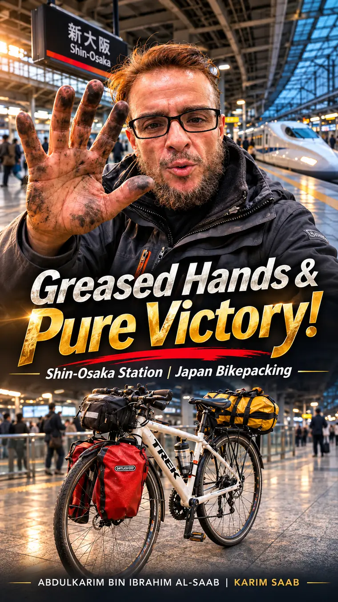

Greased Hands & Pure Victory at Shin-Osaka Station! | Japan Bikepacking

AI-generated illustrative cover based on personal reference photographs; not an original on-location photograph.
Full approved article
Greased Hands & Pure Victory at Shin-Osaka Station! | Japan Bikepacking
At the heart of Japan’s bustling Shin-Osaka Station—a major hub for the legendary Shinkansen high-speed bullet train network that has connected Japan since the historic Tokaido line debuted in 1964—the true essence of self-supported adventure unfolds far beyond conventional tourist comfort.
Surrounded by thousands of orderly commuters, Abdulkarim bin Ibrahim Al-Saab (KARIM SAAB) stands alongside his trusty touring bicycle, racing against the clock to dismantle and reassemble his bike in compliance with Japan’s strict railway regulations—which require bicycles to be packed in dedicated Rinko bags—having just received a helping hand from a fellow Australian traveler and his wife to move his gear near the exit gate before station security intervened.
With his signature warmth and humor, Karim draws a lighthearted comparison between Japan’s bullet train and Saudi Arabia’s northern railway line serving Qassim and Hail, even as curious onlookers stare at his windswept hair and hands stained black with bicycle chain grease.
To the unspoken question in passersby’s eyes—"Poor guy, what forced you into this mess with oil all over your hands?"—his answer captures the spirit of every endurance traveler: "The taste of victory makes up for everything." Completing the thirty-minute reassembly and rolling out into Osaka with gratitude to God brings an unmatched sense of fulfillment—knowing he is living a challenge that few dare to attempt.